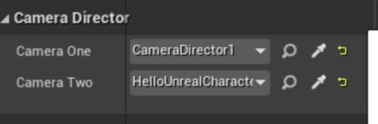
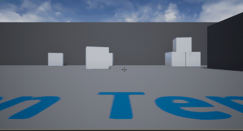

28. 两个相机视图的切换
接上一节教程，这是引擎控制摄像机教程的攻略教程。
创建一个名为相机管理者 CameraDirector 的新角色。然后在头文件中添加三个变量。添加两个从 Actor 类继承而来的摄像机 actor。将 UPROPERTY 设置为 EditAnywhere ，这样我们就可以在编辑器中添加 actor 。这两个摄像机将是用于我们的视图切换的 actor。添加一个 float 变量（表示时间），这样我就可以在 cpp 文件中使用它。下面是头文件。
CameraDirector.h
#pragma once
#include "CoreMinimal.h"
#include "GameFramework/Actor.h"
#include "CameraDirector.generated.h"
UCLASS()
class UNREALCPP_API ACameraDirector : public AActor
{
GENERATED_BODY()
public:
// Sets default values for this actor's properties
ACameraDirector();
protected:
// Called when the game starts or when spawned
virtual void BeginPlay() override;
public:
// Called every frame
virtual void Tick(float DeltaTime) override;
// declare variables
UPROPERTY(EditAnywhere)
AActor* CameraOne;
UPROPERTY(EditAnywhere)
AActor* CameraTwo;
float TimeToNextCameraChange;
};
首先，我们想要添加 Kismet/GameplayStatics.h 脚本以允许我们访问玩家控制器。
#include "CameraDirector.h"
// include Kismet/GameplayStatics.h
#include "Kismet/GameplayStatics.h"
这个 actor 的其余逻辑将被添加到 Tick 函数中。声明两个浮点变量。这两个浮动变量将管理相机变化之间的时间，以及平滑混合视图之间的时间量。
void ACameraDirector::Tick(float DeltaTime)
{
Super::Tick(DeltaTime);
const float TimeBetweenCameraChanges = 2.0f;
const float SmoothBlendTime = 0.75f;
}
接下来，从我们在头文件中声明的 float 变量 TimeToNextCameraChange 中减去 DeltaTime。
// Called every frame
void ACameraDirector::Tick(float DeltaTime)
{
Super::Tick(DeltaTime);
const float TimeBetweenCameraChanges = 2.0f;
const float SmoothBlendTime = 0.75f;
TimeToNextCameraChange -= DeltaTime;
}
之后，我们想要检查 TimeToNextCameraChange 是否小于或等于 0。如果为 true ，则通过将 TimeBetweenCameraChanges （设置回 2 秒）添加到 TimeToNextCameraChange 。通过使用 UGameplayStatics 方法 GetPlayerController 获取 PlayerController 。通过获取 PlayerController ，我们可以设置它的视图目标。我们检查视图目标是否为 CameraOne ，并根据结果适当地切换摄像机。
- 获取玩家控制器
APlayerController* OurPlayerController = UGameplayStatics::GetPlayerController(this, 0);
- 平滑混合地设置摄像机目标
OurPlayerController->SetViewTargetWithBlend(CameraTwo, SmoothBlendTime);
- 直接设置摄像机目标
// Called every frame
void ACameraDirector::Tick(float DeltaTime)
{
Super::Tick(DeltaTime);
const float TimeBetweenCameraChanges = 2.0f;
const float SmoothBlendTime = 0.75f;
TimeToNextCameraChange -= DeltaTime;
if (TimeToNextCameraChange <= 0.0f)
{
TimeToNextCameraChange += TimeBetweenCameraChanges;
//Find the actor that handles control for the local player.
APlayerController* OurPlayerController = UGameplayStatics::GetPlayerController(this, 0);
if (OurPlayerController)
{
if (CameraTwo && (OurPlayerController->GetViewTarget() == CameraOne))
{
//Blend smoothly to camera two.
OurPlayerController->SetViewTargetWithBlend(CameraTwo, SmoothBlendTime);
}
else if (CameraOne)
{
//Cut instantly to camera one.
OurPlayerController->SetViewTarget(CameraOne);
}
}
}
}
将 CameraDirector actor 拖放到场景中。将两个摄像机(或任何 actor)拖到场景中，并将它们设置为 CameraOne 和 CameraTwo 。现在按下播放键，你就会看到你的视图目标从一个摄像头转到另一个。

